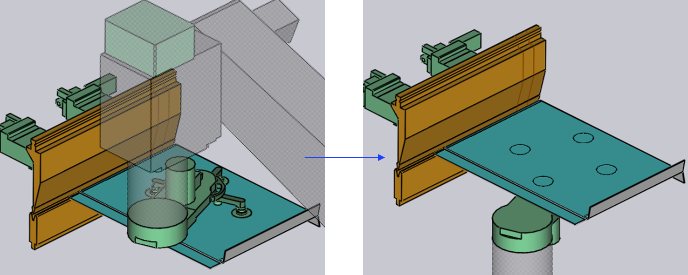

Okno prechytenia

Typické okno Prechytenie je zobrazené vedľa:
Pre prístup k oknu prechytenia:
-
Kliknite dvakrát na bunku R1 v navigátore ohýbania.
-
Alternatívne kliknite na súčiastku držanú uchopovačom BendMaster v pozícii opätovného uchopenia.
Metóda opätovného uchopenia
Päť metód opätovného uchopenia súčiastky je:

-
Clamp
-
Clamp+Station
-
During Bend
-
Station
-
Post-Bend
Clamp
Keď vyberiete metódu Clamp, uchopovač spolieha na ohýbacie nástroje (razník a matricu), aby držali súčiastku, dokončili sekvenciu otáčania a potom opätovne uchopia z druhej strany súčiastky.
Insert part first a BG: Z before X sú už vysvetlené v Stratégia vkladania.

Clamp+Station
Keď vyberiete metódu Clamp+Station, opätovné uchopenie sa deje v upínacom bode, ale tiež na RG-Stations podporujúcich súčiastku.
Táto metóda je užitočná pri ohýbaní dlhých prevísajúcich súčiastok.

During Bend
V metóde During Bend hneď ako sa ohýbacia operácia začne, uchopovač začne súčasne otáčať (ak je to potrebné) a vykoná opätovné uchopenie presne na konci ohýbacej operácie.
Otvorenie razníka začína len vtedy, keď je súčiastka pevne držaná uchopovačom robota.

Station
Keď vyberiete metódu Station, opätovné uchopenie sa deje so staniciami RG podporujúcimi súčiastku.
Táto metóda je nevyhnutná pri manipulácii so súčiastkami s veľkými rozmermi.

Post-Bend
Keď vyberiete metódu Post-Bend, opätovné uchopenie sa deje po procese ohýbania, pričom súčiastka je stále v upínacom bode.
V tejto metóde uchopovač robota bude pomáhať súčiastke počas ohýbacej operácie. Keď je ohýbacia operácia dokončená s očakávanými výsledkami, operácia opätovného uchopenia sa spustí.

Otáčanie
Počas operácie opätovného uchopenia robotický uchopovač umiestni súčiastku medzi ohýbacie nástroje alebo na uchopovač staníc RG a potom sa presunie na druhú stranu súčiastky, aby vykonal opätovné uchopenie.
Aby sa predišlo kolízii, robotický uchopovač je mierne vytiahnutý ďalej od súčiastky, ohnutých nástrojov a staníc RG a potom vykoná otáčací pohyb. Toto vytiahnutie a otáčací pohyb sa deje tromi spôsobmi:
-
Predu
-
Vľavo
-
Vpravo
Obrázok nižšie zobrazuje vytiahnutie uchopovača:

Po tomto pohybe sa uchopovač otočí a presunie na spodnú časť súčiastky a vykoná opätovné uchopenie.